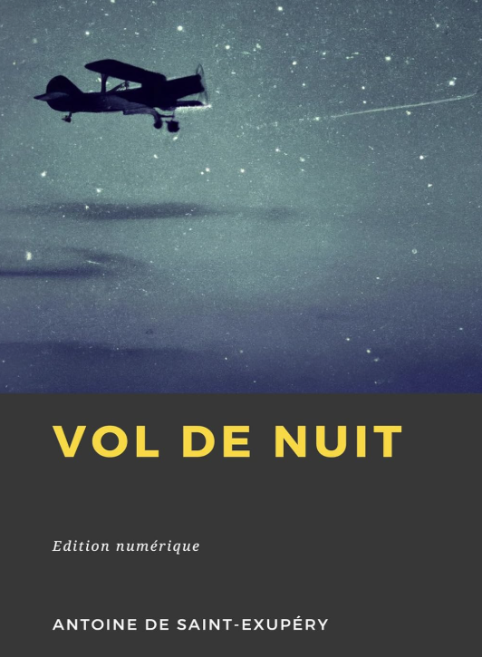
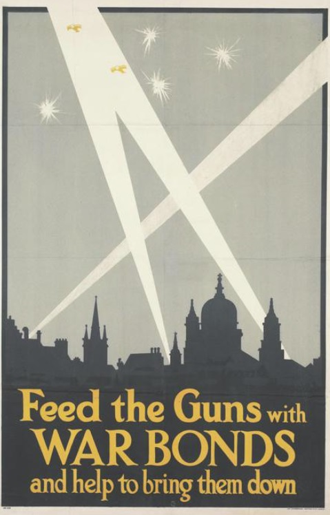
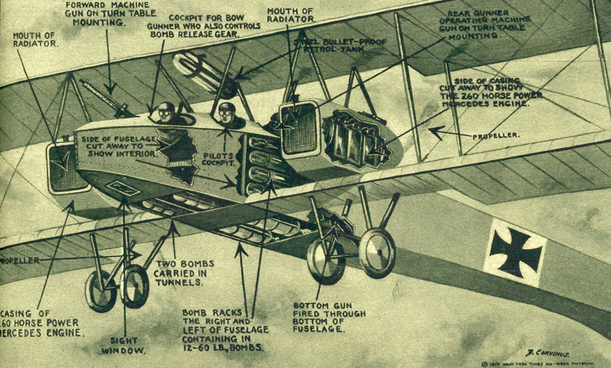
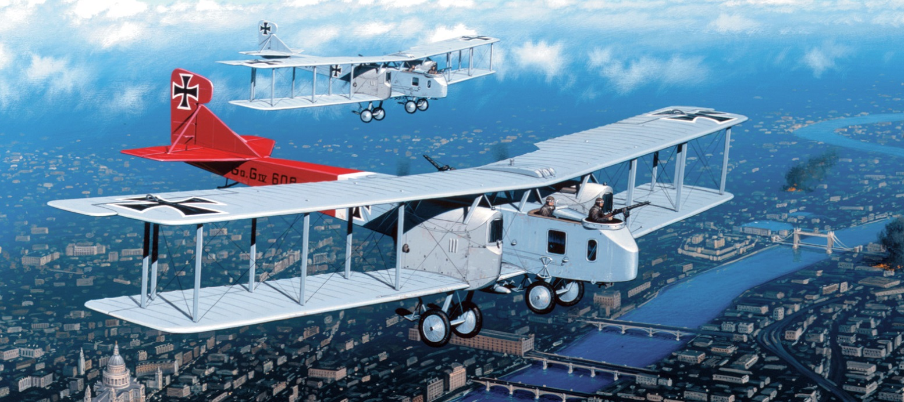
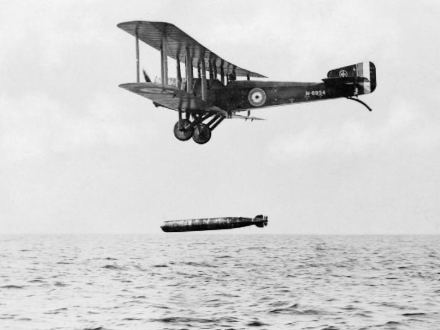
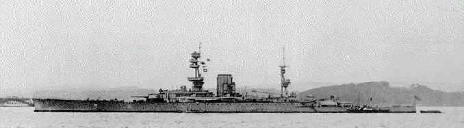
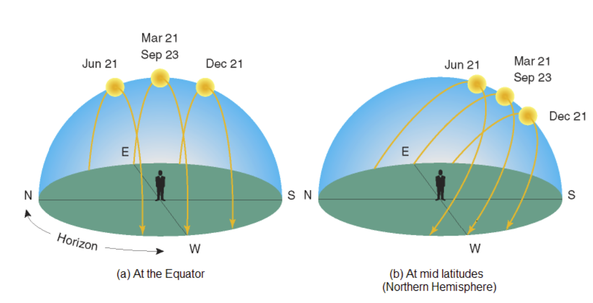

WW2 중 항모에서의 야간 작전 (8) - 해가 빨리 지는 바다
게시: 2025-04-10T06:30:54+09:00
올빼미 같은 특수한 경우를 뺴고는 새는 밤에 날지 않음. 네발 짐승들 중에는 야행성 짐승도 많지만 대부분의 조류는 주행성임. 하늘을 나는 새는 냄새나 소리가 아니라 눈으로 먹이와 위험을 파악해야 하므로, 해가 없는 밤에는 날지 않는 것임. 같은 이유로, WW2 직전까지도 각국의 해군 항공대는 야간 비행은 어지간해서는 하지 않았음. 폭격할 적의 도시도, 그리고 돌아올 아군 기지도 모두 위치가 고정되어 있는 육군과는 달리, 해군 항공대의 목표물은 빠른 속력으로 움직이는 군함이었기 때문.

(물론 민간에서는 WW1~WW2 사이에 야간 비행을 곧잘 했음. 그래서 이 책 표지처럼 생뗵쥐뻬리의 '야간비행'이라는 소설까지 있는 것임.)

(또한 WW1 기간 중 독일은 쩨펠린 비행선과 Gotha 폭격기를 이용하여 야간에 런던을 공습하기도 했음. 그러나 이건 도시처럼 고정된 목표물을 추측항법(dead reckoning)에 의해 찾아가는 방법을 쓴 것이고, 비행 정확도는 크게 떨어졌음. 목표물을 찾아갈 때도 그랬지만, 기지로 돌아오는 것도 쉽지 않았음.)
 
(WW1 당시 독일의 장거리 폭격기 Gotha) 그러다 WW1 직전에 항공어뢰의 개념이 개발되고 WW1 기간 중 항공기로 어뢰를 투하하여 실전에서 선박을 침몰시키게 되면서, 전문적인 뇌격기의 시대가 열리게 됨. 그런데, 맨 처음 항공어뢰의 개념을 만들어낸 미해군의 피스크(Bradley Allen Fiske) 제독도 항공어뢰를 이용한 공격 전술을 설계하면서, 야간에 적함을 공격하는 것을 염두에 두었음. 피스크 제독이 생각하기에도 크고 무거운 어뢰를 단 폭격기는 느릴 수 밖에 없는데 그렇게 느린 항공기가 어뢰를 투하할 정도의 저고도로 군함 가까이 접근하면 대공포에 맞아 격추되기 딱 쉽상이었기 때문. 하지만 어둠 속에서 공격한다면? 훨씬 생존률이 높을 것 같았음. 그러나 피스크 제독이 항공어뢰를 고안해낸 1910년에는 어차피 어뢰를 장착하고 날 수 있는 대형 항공기도 없었기 때문에 야간에 어떻게 적함을 찾아내는가 하는 문제는 피스크 제독도 깊게 고민하지는 않았음. 비슷한 시기에 항공어뢰를 연구하고 개발한 영국과 이탈리아, 독일 등도 모두 주간 공격만 생각했지 야간 공격을 생각하지는 않았음.

(WW1 기간 중 실제로 뇌격기가 항공어뢰로 적함을 격침시킨 사례는 몇 건 있으나, 이는 전문적인 뇌격기로 공격한 것이 아니라 급한 대로 일반 폭격기나 수상정에 어뢰를 장착하여 공격한 사레이고, 또 실제로 공격에 성공하여 격침시킨 것도 모두 느린 화물선이나 예인선을 공격한 경우들임. 실제로 영국 화물선을 어뢰로 공격하던 독일 수상정은 영국 화물선을 침몰시키기는 했으나 그 화물선에서 쏘아댄 대공포에 맞아 격추될 정도로, 군함의 대공포에 취약했음. 사진은 본격적인 뇌격기로 설계된 영국해군 항공대의 Sopwith T.1 Cuckoo. 다만 너무 늦게 개발되어 WW1 실전에 참전하지는 못했음.) 당시 바다의 지배자였던 영국해군은 어차피 야간 해전에 관심이 전혀 없었으므로 야간에 뇌격기로 적함을 공격하겠다는 생각은 아무도 하지 않았음. 그러나 지난 이야기에서 언급했던 것처럼, 1930년대가 되자 영국해군의 제해권이 흔들리기 시작함. 더 이상 영국해군이 필승을 장담할 수 없게 되면서 영국해군에서도 야간 해전을 연구하고 훈련하기 시작. 당연히 뇌격기로 야간에 적함을 습격하는 작전에 대해서도 연구를 시작. 그 연구는 1930년 항모로 개장하고 취역한 이래 WW2 발발 때까지 줄곧 지중해 함대에 배치되었던 HMS Glorious의 항공대가 수행함.

(원래 HMS Glorious는 WW1 중 순양전함으로 건조되어 1917년 취역까지 한 상태였음. 종전 이후 워싱턴 해군 조약에 걸려 결국 항공모함으로 개조된 케이스임. 이 사진은 1918년 당시 순양전함이었던 HMS Glorious.)
이들이 생각해낸 가장 이상적인 야간 뇌격은 일출과 일몰시의 공격. 아침놀이든 저녁놀이든 수평선에 해가 아슬아슬 걸려 있을 때 태양을 등진 적함은 낮게 나는 뇌격기에게는 붉은 하늘을 배경으로 매우 또렷하게 잘 보임. 태양 반대 방향에서 날아드는 뇌격기는 어둠 속에 있으므로 적함에서는 잘 보이지 않음. 그러니 뇌격 성공은 물론 뇌격기의 생존률에 가장 유리한 환경이 바로 일출과 일몰시 그 짧은 순간을 이용하는 것이었음. 그러나 이 전술은 곧장 기각됨. 이유는 글로리어스의 조종사들이 이런 주장을 펼쳤기 때문. "영국 인근의 북해와는 달리 이곳 지중해에서는 해가 놀랍게 빨리 뜨고 빨리 진다. 그 짧은 순간에 공격 타이밍을 잡는 것은 사실상 불가능하다." 당연히 짧은 시간 안에 공격을 시작하고 끝내는 것은 매우 어려운 일. 그러나 지중해에서는 빨리 태양이 진다는 말이 사실일까? 놀랍게도 사실. 지중해는 영국에 비해 상당히 낮은 위도에 위치해 있기 때문에 벌어지는 일. 저위도 지역일수록 하늘에 있던 태양이 수평선 밑으로 사라질 때 그리는 궤적이 수평선과 이루는 각도가 90도에 더 가까운 큰 각도가 나오며, 고위도 지역일수록 그 궤적은 수평선과 작은 각도를 그리게 됨. 따라서 정말 저위도 지역에서는 해가 수평선에 닿은 순간부터 수평선 아래로 완전히 사라질 때까지 걸리는 시간이 더 짧은 것임. 물론 그 시간차가 엄청나게 크지는 않고, 북해에서 3분 정도 걸리는 일몰이 지중해에서는 2분 걸리는 정도의 차이.

(왜 아침놀 저녁놀이 저위도에서는 더 짧게 유지되는지 보여주는 그림. 북극 지역에서는 계절에 따라 태양이 아예 안 뜨는 극야(polar night)가 되거나 아예 안 지는 백야가 됨.) 글로리어스의 조종사들이 머쓱하게도 약 10년 뒤인 1943년 렌넬 섬(Rennel Island) 해전에서 일본해군 항공대가 지중해보다 더 낮은 위도의 솔로몬해 인근에서 석양을 이용한 공격을 매우 성공적으로 수행해낸 (https://nasica1.tistory.com/802 참조) 것은 훨씬 나중의 일이고, 또 일본해군이 해낸 것을 자신들은 시도조차 해보지 않았다고 영국해군이 시무룩할 필요는 없었음. 영국해군은 그렇게 아침놀 저녁놀을 이용한 뇌격을 포기하는 대신, 아예 본격적으로 야간 뇌격을 연습했기 떄문임. 당시 전세계 해군 중에서 항공모함을 가진 해군은 미영일 밖에 없긴 했지만, 그렇게 야간 뇌격을 연습한 것은 정말 영국해군이 유일했음. 덕분에 타란토 야습이 가능했던 것.